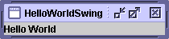
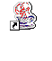
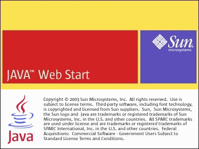

Feedback Form
|
|
Start of Tutorial > Start of Trail > Start of Lesson |
Search
Feedback Form |
This section explains how to compile and run a Swing application. The compilation instructions work for all Swing programs — applets, as well as applications. Here are the steps you need to follow:
- Install the latest release of the Java 2 platform, if you haven’t already done so.
- Create a program that uses Swing components.
- Compile the program.
- Run the program.
Install the Latest Release of the Java 2 Platform
You can download the latest release of the J2SE SDK for free from http://java.sun.com/j2se.Create a Program That Uses Swing Components
You can use a simple program we provide, called HelloWorldSwing, that brings up the GUI shown in the figure below. The program is in a single file,HelloWorldSwing.java. When you save this file, you must match the spelling and capitalization of its name exactly.
 Compile the Program
Your next step is to compile the program. Here’s an example of compilingHelloWorldSwing.javaIf you can’t compile, make sure you’re using the compiler in a recent release of the Java platform. Once you’ve updated your SDK, you should be able to use the programs in this trail without changes. Another common mistake is installing the Java Runtime Environment (JRE) and not the full Software Development Kit (SDK) needed to compile these programs. Refer to the Getting Startedjavac HelloWorldSwing.javatrail to help you solve any compiling problems you encounter. Another installation troubleshooting guide for the Java 2 platform is online at: http://servlet.java.sun.com/help/installation/.
Run the Program
After you compile the program successfully, you can run it. Assuming that your program uses a standard look and feel — such as the Java, Windows, or GTK+ look and feel — you can use the interpreter to run the program without adding anything to your class path. For example:For programs that use a nonstandard look and feel or any other nonstandard code package, you must make sure that the necessary classes are in the class path. For example:java HelloWorldSwingAlternatively, you can launch your program from a Web browser using Java Web Start.
- Solaris/Linux
- java -classpath.:/home/me/lnfdir/newlnf.jar HelloWorldSwing
- Microsoft Windows
- java -classpath .;C:\java\lnfdir\newlnf.jar HelloWorldSwing
Running Programs Using Java Web Start
Java Web Start is a technology that simplifies the distribution of applications. With a click on a Web page link, you can launch full-featured applications without a complicated download and installation process. The first time you launch an application, Java Web Start automatically downloads all necessary files. It then caches them on your computer so the application can be quickly relaunched from a desktop shortcut or from a Web browser. Java Web Start checks for updates each time you run a remote application and downloads any updated files automatically.In 1.4.1 and later releases of the Java platform, Java Web Start is shipped as part of the platform. So, if you have J2SE or JRE v1.4.1 or higher, you already have Java Web Start installed. When you install a version of the Java platform with Java Web Start, on most platforms you’ll see a Java Web Start shortcut on your desktop.
 To test whether your browser can launch an application using Java Web Start, click this link.You should see a Java Web Start splash screen, such as the following.
 The application is then downloaded, and you should see this:If you're unable to launch this application, you should check Installing and Using Java Web Start
|
|
Start of Tutorial > Start of Trail > Start of Lesson |
Search
Feedback Form |
Copyright 1995-2004 Sun Microsystems, Inc. All rights reserved.